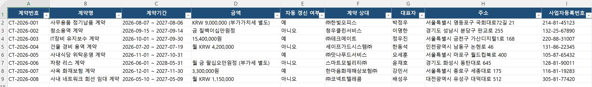

// 실습 2 · 계약서에서 계약종합 만들기
1단계 · 계약종합 만들기¶
계약서 8건에서 아래 6개 항목을 뽑아 한 표(계약종합 엑셀)로 만듭니다. 한 계약이 한 줄입니다.
뽑을 항목 여섯 개¶
계약번호 / 계약명 / 상대방 / 계약기간 / 금액 / 자동갱신 여부
직접 시켜보세요¶
여러분 문장으로 AI에게 시킵니다. 아래 두 체크리스트를 먼저 읽고, 빠진 규칙이 없도록 프롬프트에 담으세요.
프롬프트에 꼭 담을 것 ✅¶
- 뽑을 6개 항목을 그대로 지정 (계약번호·계약명·상대방·계약기간·금액·자동갱신 여부)
- 안 적힌 항목은 지어내지 말고 비워둘 것
- 금액 조항이 없으면 0이 아니라 빈칸으로 둘 것
- 폴더의 계약서 8건을 모두 읽어 한 계약당 한 줄로 정리
- 결과를
계약종합엑셀 파일로 저장
이런 건 빼세요 ❌¶
- "알아서 잘 정리해줘"처럼 규칙 없는 지시 (없는 값이 채워집니다)
- 빈칸을
0으로 채우기 (금액 0원과 "금액 모름"은 다른 사건) - 항목을 마음대로 더하거나 바꾸기
실행 예시¶
이렇게 나오면 됩니다

체크포인트¶
- 계약종합이 8행(계약 8건)으로 나왔다
- 금액이 없는 계약이 빈칸으로 남아 있다 (0이 아님)
- 6개 항목이 모두 채워졌고, 없는 값을 지어내지 않았다